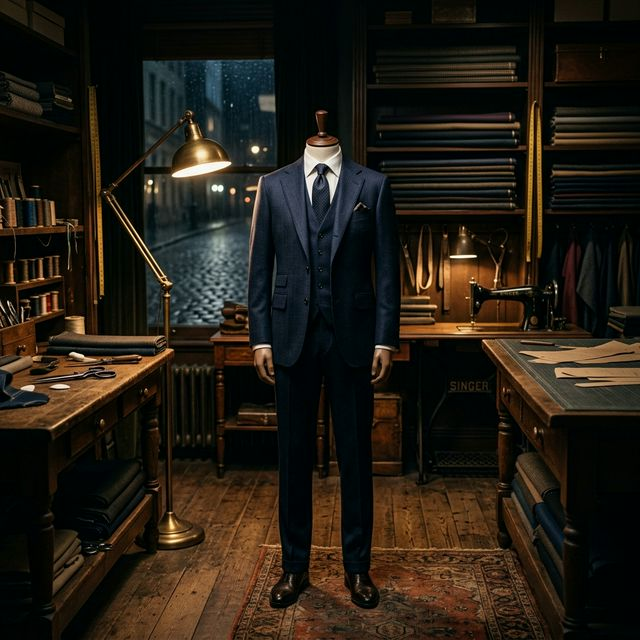

Crafted Services for
the Discerning Client
From bespoke suits to expert alterations every service we offer is delivered with the same unwavering commitment to excellence.
Our Services

Bespoke Suits
The pinnacle of personal styleFully hand-crafted suits built from scratch to your exact measurements, lifestyle, and aesthetic vision. We collaborate closely with you to select the perfect cloth, style details, and drape, ensuring a garment that is uniquely yours.

Wedding Suits
Dressed for the most important dayImpeccably tailored wedding suits and morning coats that honour the gravity and joy of your ceremony. Our master tailors ensure you walk down the aisle with absolute confidence, wearing a garment that is perfectly fitted and photo-ready.

Custom Shirts
The foundation of every great outfitCrafted from the finest cottons and linens, our made-to-measure shirts are tailored to your body and taste. Choose from a library of collars, cuffs, and details to complement your formal and everyday wardrobe.

Alterations & Restoration
Precision adjustments, renewed eleganceExpert alterations, repairs, and restorations that breathe new life into cherished garments. Whether refining the fit of an heirloom piece or performing structural repairs, we apply the same precision as our bespoke commissions.

Styling Consultation
Your personal image, perfectedA comprehensive personal styling experience to define your wardrobe identity and elevate your everyday presence. We analyze your fit, coordinate fabric selections, and create a cohesive wardrobe tailored to your professional and personal life.
Service Pricing
Every commission is unique. These prices reflect our starting points on your consultation will provide an accurate, detailed estimate.
Bespoke Suits
From $2,500Fully hand-crafted garments, cut and constructed by a single artisan on Savile Row to your unique measurements.
- 4,000+ Premium Fabrics
- Full canvas construction
- Unlimited Fittings
Wedding Suits
From $2,800Impeccable morning coats and tailoring, designed to reflect the gravity and elegance of your most memorable day.
- Expert styling advice
- Coordinated party options
- Perfect photo-ready fit
Custom Shirts
From $290Made-to-measure shirts tailored from fine Egyptian cotton, offering custom collar, cuff, and monogram details.
- Pure Egyptian cottons
- Choice of collar & cuffs
- Personal Monogramming
Alterations
From $80Artisanal resizing and restorative repairs to renew and elevate the structure of your treasured custom garments.
- Precision resizing
- Garment restoration
- Lifetime care advice
Consultation
From $350A comprehensive styling session to review your wardrobe, coordinate fabrics, and define your personal style.
- Personal wardrobe audit
- Color profile analysis
- Ongoing styling support
The Craft in Detail



Frequently Asked Questions
What is the difference between bespoke and made-to-measure?
Bespoke is a unique pattern created from scratch for your body, with multiple fittings and extensive hand-work. Made-to-measure adapts an existing base pattern to your measurements. Bespoke offers total design freedom and the highest level of fit.
How do I begin the process?
Everything starts with a private consultation. We'll discuss your needs, look at fabrics, and explain the construction options. Once you choose your path, we take over 30 measurements to begin your commission.
How long does a bespoke suit take to make?
The standard timeframe is 10 to 14 weeks. This allows for the internal construction of the floating canvas by hand and includes at least two intermediate fittings to ensure absolute perfection.
Do you offer services outside London?
Yes, we offer trunk shows in major international cities and private home/office visits for our high-level commissions. Please contact our concierge to discuss your location.
What is your alteration policy for bespoke garments?
We provide lifetime care for all bespoke garments. Basic adjustments for weight fluctuations are often complimentary for the first year, and we offer a full refurbishment service for older garments.
Can I view the fabric library before my appointment?
We encourage you to visit our Savile Row studio to experience the weights and textures of our 4,000+ fabrics. We can also mail curated swatch cards to you following an initial phone consultation.